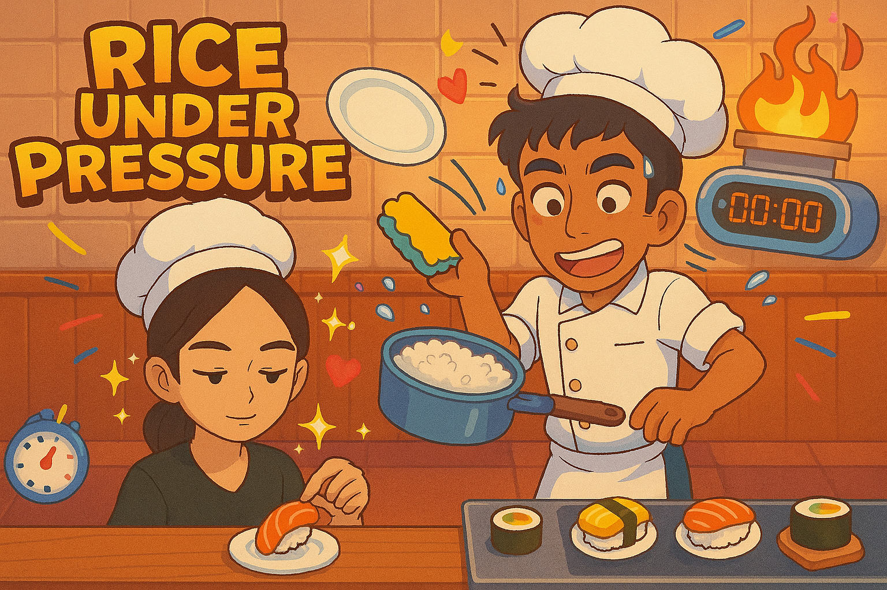
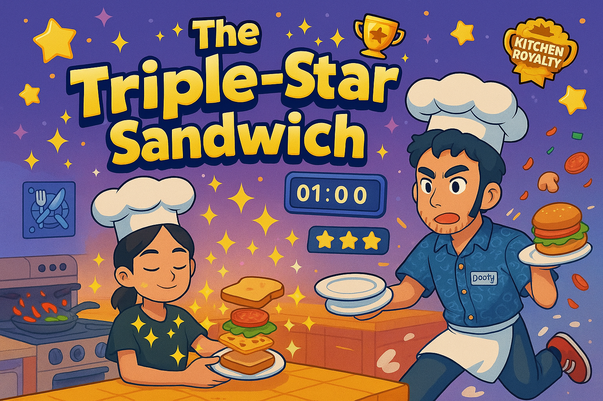

Chaotic Recipes
Some of the crazy dishes you'll prepare in Overcooked 2

🧅 Dish 1: “The Onion Sacrifice”
🔥 Difficulty: Strategically EmotionalThe dish where Quackers told Doofy to toss the onions — and he launched them into the abyss. Twice. Still, no restart because… the vibes were right.
👩🍳 Chef’s Note: "Onions are temporary. Her patience? Legendary."
Emotional
Unpredictable

🍣 Dish 2: “Rice Under Pressure”
🔥 Difficulty: Morale-DependentQuackers was calmly assembling sushi like a goddess. Doofy? Juggling rice, dishes, and internal panic. Did the rice burn? Probably. Did we still win? You bet.
💬 Fun Fact: Doofy was voted “Best Rice Rescuer 2024”.
Teamwork
High Stakes

🥪 Dish 3: “The Triple-Star Sandwich”
🔥 Difficulty: Perfection or BustWe didn’t just complete this level. We dominated it. Plates flew, dishes sparkled, Quackers calculated, and Doofy ran like a caffeinated duck. 3 stars or we restart — always.
🏆 Achievement Unlocked: "Kitchen Royalty with Side of Chaos"
Mastery
Relentless